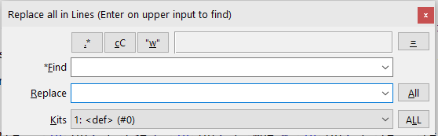

To use it call Commands item
or main menu Plugins subitem
Start dialog is like this
Basic features:
Find and pressing Enter you can view fragments (as by FindInLines). The number of the fragment and overall number of fragments are shown in statusbar..*-cC-"w", filling Find and Replace and pressing All you will replace all fragments in the current tab (just as by using core Replace dialog)..*-cC-"w", Find, Replace (kit) and press ALL..*-cC-"w" + Find + Replace) can have a name (even empty one). Current one is shown in the bottom combo as <number>:<name> (#<number of elements>).Ctrl+E to edit current one or Ctrl+N to create new one.ALL will show the number of times Find (in the kit) are found in the tab and ask to confirm replacement.=\Kits\Edit kits... allows to view/edit all kits content at once and can be used to import/export data via clipboard.ed.action(EDACTION_FIND_ONE/EDACTION_FIND_ALL/EDACTION_REPLACE_ALL, ...)